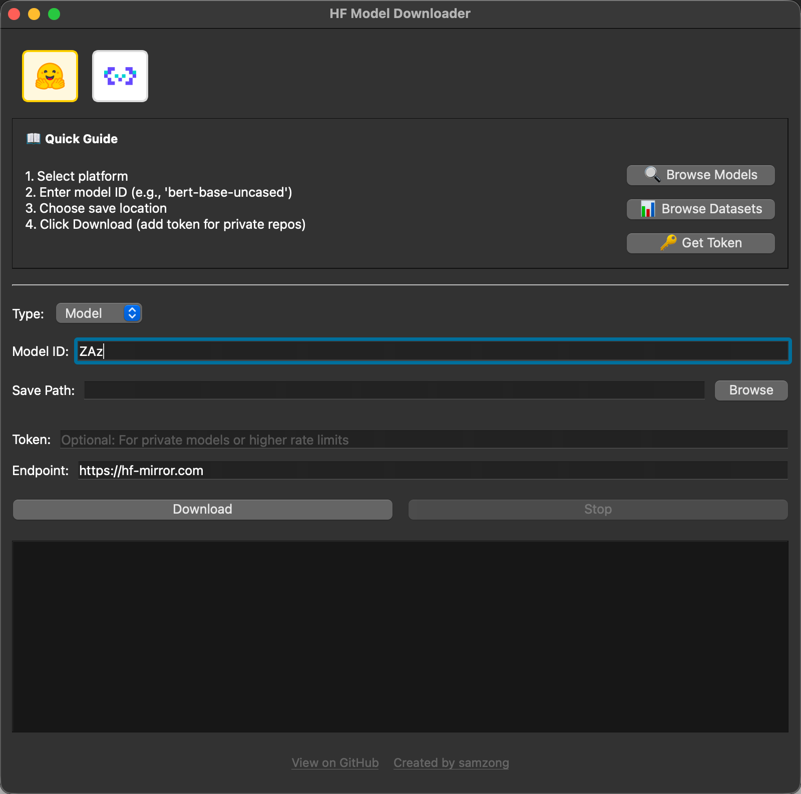

A cross-platform GUI application for easily downloading Hugging Face models without requiring technical knowledge or setup.



git clone https://github.com/samzong/model-downloader.git
cd model-downloader
pip install -r requirements.txt
python main.py
To create standalone executables:
pip install pyinstaller
pyinstaller --onedir --windowed main.py
This project is licensed under the MIT License - see the LICENSE file for details